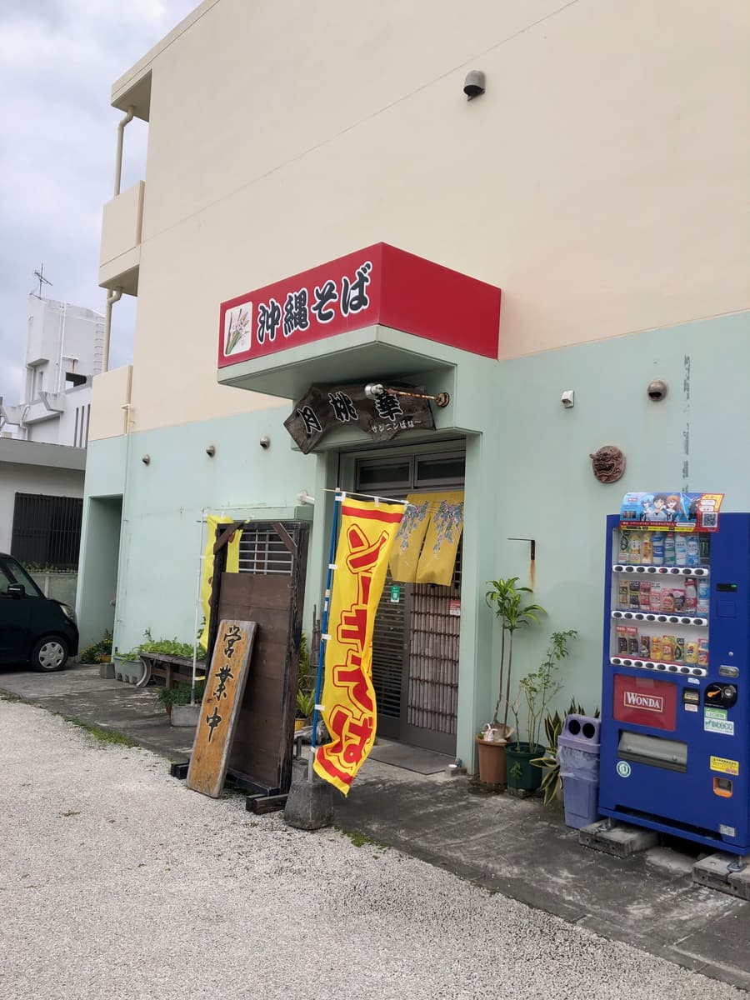
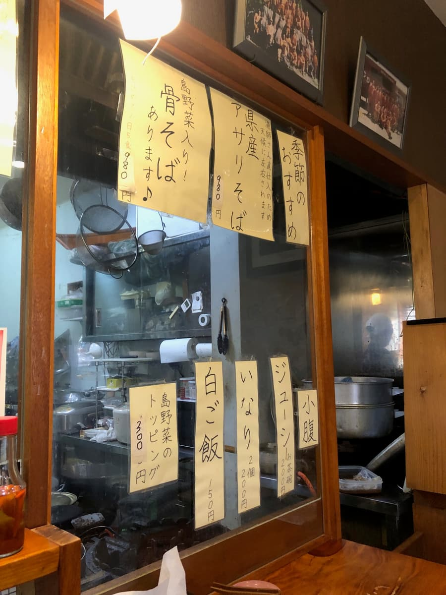
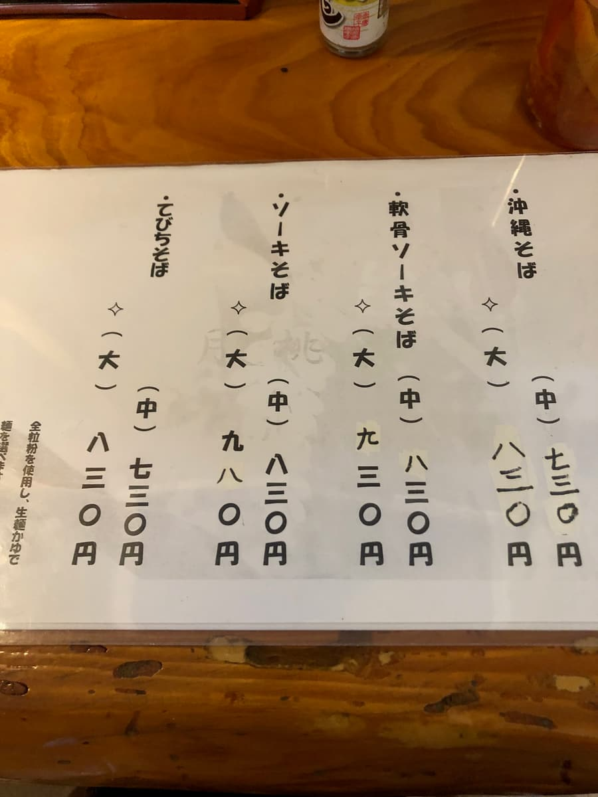
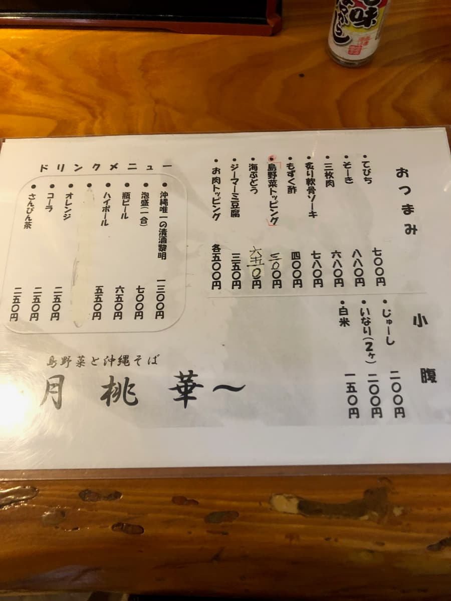
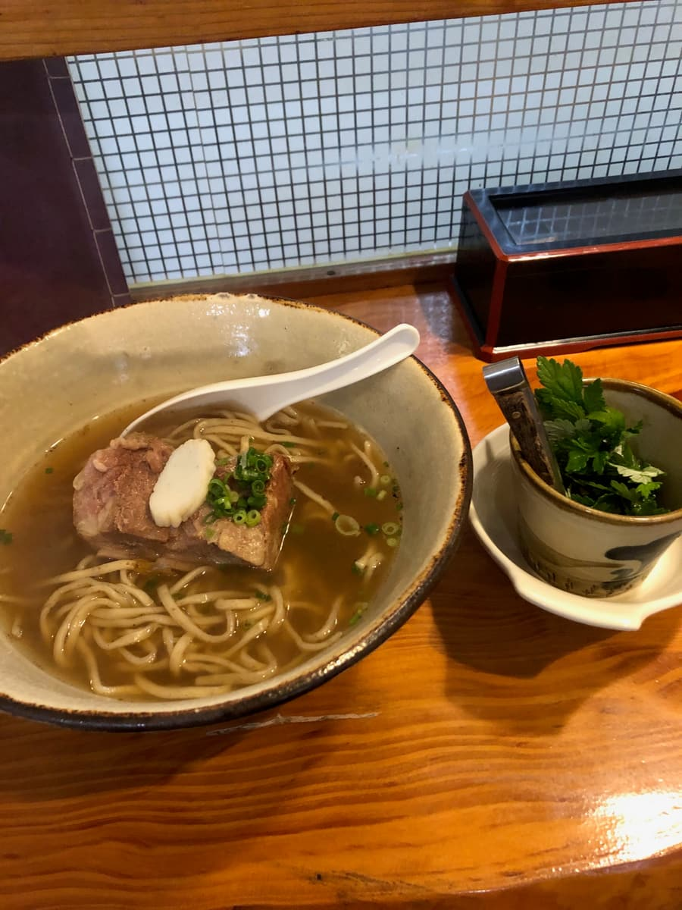
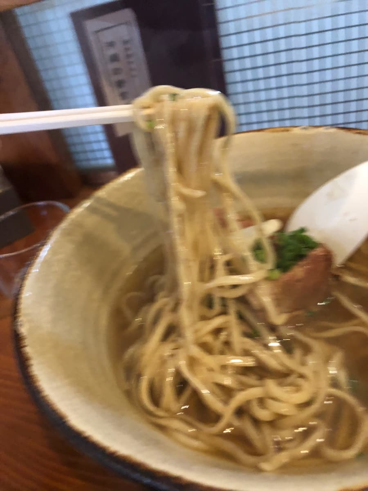

*This article was created with the AI Claude 4 Sonnet, with some additions of my own.
I ate here in December 2024😄 I went to "Sannin-bana" in Nishizaki, Itoman City😊

At first glance the exterior looks like an ordinary diner, and the words "Okinawa soba" on the red sign catch the eye. The building stands quietly in a residential area, with an atmosphere that suggests it's loved by the locals✨
There's parking for only two cars in front of the shop, so at lunchtime you'll probably have to wait a bit. In fact, when I visited there were customers ahead of me, and I waited a little for a parking space to open up😅

Inside, there's a warm atmosphere with the warmth of wood. There are counter seats and table seats, and the kitchen is close by, giving it a homey feel. The owner seems to run the place single-handedly, and you can tell each bowl is made with care👨🍳


Looking at the menu, there's a simple lineup of basic Okinawa soba. The prices are reasonable too, and I like that it's a place local people can casually drop in to💰
This time I ordered the "Soki Soba (Large)" for ¥980. At this shop you can choose your noodles, either fresh noodles or pre-boiled noodles. Since I was there, I asked for the fresh noodles🍜
The "soki soba" arrived. It looks really simple, giving the impression of an old-fashioned Okinawa soba. The bowl is rustic too, and you can feel a homey warmth🍲

First, as is my custom, a sip of the soup. A soup with a strong bonito broth, giving you that reassuring feeling of "Ah, this is Okinawa soba"😌

After the soup, I dig into the noodles. The fresh noodles I chose are a thin straight type, with a softish texture🍝
The pork spare ribs (soki) topping is seasoned on the sweet side, but unfortunately there were some parts with small bones left in. That made it a little hard to eat😅
Partway through I tried adding the fuchiba (mugwort) they gave me for free. Its distinctive bitterness and aroma are added to the soup, letting you enjoy a healthy-feeling change of flavor. It's a traditional Okinawan way of eating, and this bitterness makes a nice accent🌿
In the latter half I also added a little of the kōrēgūsu (chili-infused awamori) on the table and enjoyed a spicy change of flavor too. That way I got to enjoy three different flavors and ate it all the way to the end without getting bored🌶️
Looking around the shop, there are many local customers, and you can clearly see it's a shop loved by the community.
From the outside it gave the impression of an ordinary diner, but when I actually ate, it was a pretty authentic Okinawa soba✨
However, since there's parking for only two cars and the owner runs the shop single-handedly, you'll probably have to wait a bit when it's busy. I recommend visiting with some time to spare⏰
Rating (9/15): Overall, my impression is of a warm, community-based Okinawa soba shop, and it's surprisingly authentic. It doesn't have any especially standout features, but you can enjoy a carefully made Okinawa soba with a reassuring taste. When you're in the Nishizaki area of Itoman City, why not stop by once?😊
Noodles: ★★★☆☆（3）
Soup: ★★★☆☆（3）
Toppings: ★★★☆☆（3）